Trabalho Acadêmico · Segurança de Redes
Projeto Conexões Seguras
Projeto acadêmico sobre segurança de redes corporativas, abordando sniffing, TLS, sessões web e VPNs.
Sniffing
Descrição:
Objetivo: Demonstrar a captura e análise de pacotes em rede utilizando o Wireshark, evidenciando o funcionamento do modo promíscuo e o monitoramento de protocolos da camada de rede.
Ferramenta Utilizada: Wireshark
Passo a Passo:
- Abrir o Wireshark.
- Selecionar a interface de rede ativa.
- Iniciar a captura de pacotes.
- Gerar tráfego utilizando o comando ping 8.8.8.8 no Prompt de Comando.
- Aplicar o filtro ICMP no Wireshark.
- Analisar os pacotes capturados e os detalhes internos dos protocolos.
Resultado: Durante a captura realizada no Wireshark, foi aplicado o filtro ICMP para visualizar pacotes gerados pelo comando ping executado contra o endereço 8.8.8.8. Foi possível identificar pacotes do tipo Echo Request e Echo Reply, demonstrando a comunicação entre o host local e o servidor remoto. A captura comprova o funcionamento da análise de tráfego de rede utilizando modo promíscuo e monitoramento de protocolos da camada de rede.
Captura dos Pacotes ICMP:

A imagem apresenta os pacotes ICMP trafegando entre o computador local e o servidor 8.8.8.8, evidenciando o envio e recebimento de respostas do protocolo de diagnóstico de rede.
Detalhes Internos do Pacote:

Nos detalhes internos do pacote é possível visualizar informações das camadas de rede, incluindo:
- Ethernet II
- Internet Protocol Version 4 (IPv4)
- Internet Control Message Protocol (ICMP)
Essas informações demonstram como o Wireshark permite analisar os protocolos encapsulados em cada pacote trafegado na rede.
Explicação Técnica do Resultado: O modo promíscuo é uma configuração da placa de rede (NIC — Network Interface Controller) que altera seu comportamento padrão de filtragem de pacotes.
Em funcionamento normal, a NIC aceita apenas quadros Ethernet destinados ao seu próprio endereço MAC, além de pacotes de broadcast e multicast autorizados. Pacotes destinados a outros dispositivos são descartados diretamente pela interface de rede.
Quando o modo promíscuo é ativado, a NIC passa a encaminhar todos os quadros recebidos para o sistema operacional, independentemente do endereço MAC de destino. Isso permite que ferramentas como o Wireshark capturem e analisem o tráfego da rede para fins de monitoramento, diagnóstico e análise de protocolos.
Durante a demonstração prática, o Wireshark capturou pacotes ICMP gerados pelo comando ping, permitindo observar o tráfego da camada de rede e a troca de mensagens entre o host local e o servidor remoto.
TLS
Descrição:
Objetivo: Demonstrar o funcionamento do protocolo TLS, evidenciando o processo de handshake e o uso de criptografia híbrida em conexões HTTPS.
Ferramenta Utilizada: Wireshark e OpenSSL
Passo a Passo:
- Abrir o Wireshark.
- Selecionar a interface de rede ativa.
- Iniciar a captura de pacotes.
- Acessar um site HTTPS no navegador.
- Aplicar o filtro tls no Wireshark.
- Identificar os pacotes Client Hello e Server Hello.
- Executar o comando openssl s_client -connect google.com:443.
- Analisar os detalhes do handshake TLS
Resultado: Durante a captura realizada no Wireshark, foi possível identificar pacotes relacionados ao protocolo TLS, incluindo mensagens de Client Hello e Server Hello. A análise demonstrou o estabelecimento de uma conexão segura HTTPS entre o cliente e o servidor remoto. Também foi possível visualizar informações relacionadas à versão do TLS, algoritmos criptográficos utilizados e certificados digitais apresentados pelo servidor.
Captura do Handshake TLS:

A imagem demonstra os pacotes responsáveis pelo início da comunicação segura entre cliente e servidor.
Detalhes Internos do TLS:

Nos detalhes do protocolo TLS é possível visualizar:
- versão do TLS
- cipher suites
- certificados digitais
- parâmetros criptográficos da conexão
Saída do OpenSSL:

O comando OpenSSL permitiu visualizar informações adicionais da conexão HTTPS, incluindo certificado digital, versão do protocolo TLS e algoritmo criptográfico utilizado.
Explicação Técnica do Resultado: O HTTPS utiliza criptografia híbrida para garantir segurança e desempenho durante a comunicação.
Durante o handshake TLS, algoritmos de criptografia assimétrica, como RSA ou ECC, são utilizados para autenticação e troca segura de chaves entre cliente e servidor.
Após o estabelecimento da conexão, uma chave de sessão simétrica é criada e utilizada para criptografar todo o tráfego subsequente utilizando algoritmos como AES.
A criptografia simétrica é utilizada na transferência dos dados por possuir desempenho significativamente superior à criptografia assimétrica, tornando a comunicação HTTPS segura e eficiente.
COOKIES
Descrição:
Objetivo: Demonstrar o funcionamento de sessões autenticadas utilizando cookies SessionID em uma aplicação web simples, evidenciando a importância do HTTPS na proteção das informações de autenticação.
Ferramenta Utilizada: Node.js, Express, express-session e o Navegador Web (Chrome/Edge)
Passo a Passo:
- Criar uma aplicação web utilizando Node.js e Express.
- Configurar gerenciamento de sessão utilizando a biblioteca express-session.
- Desenvolver uma página de login (login.html).
- Desenvolver uma página restrita (index.html) acessível apenas após autenticação.
- Executar o servidor localmente.
- Realizar login utilizando usuário e senha pré-definidos.
- Inspecionar os cookies da aplicação utilizando as ferramentas de desenvolvedor do navegador.
- Identificar o cookie connect.sid responsável pela sessão autenticada.
Resultado: Foi possível autenticar um usuário utilizando uma sessão baseada em cookies. Após o login, a aplicação gerou automaticamente um SessionID armazenado no navegador através do cookie connect.sid. A sessão permaneceu ativa durante a navegação entre as páginas da aplicação, demonstrando o funcionamento do gerenciamento de sessão na camada de aplicação.
Tela de Login:
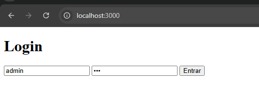
A imagem demonstra a interface utilizada para autenticação do usuário na aplicação web.
Sessão Autenticada:
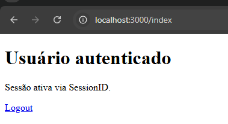
Após o login bem-sucedido, o usuário obteve acesso à área restrita da aplicação.
Cookie SessionID:
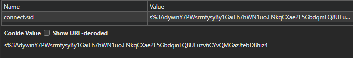
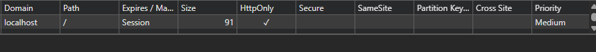
A imagem demonstra o SessionID armazenado no navegador através de cookies utilizados para manter a sessão autenticada entre cliente e servidor.
Explicação Técnica do Resultado: O SessionID é um identificador único utilizado para associar requisições HTTP a uma sessão autenticada no servidor.
Após o login, o servidor cria uma sessão para o usuário e envia um cookie contendo o identificador da sessão ao navegador. Esse cookie é automaticamente enviado em todas as requisições subsequentes, permitindo que o servidor reconheça o usuário autenticado.
Na aplicação desenvolvida, o cookie connect.sid foi utilizado para armazenar o identificador da sessão criada pela biblioteca express-session.
Do ponto de vista de segurança, o SessionID deve ser protegido adequadamente, pois sua interceptação pode permitir ataques de Session Hijacking, onde um invasor assume a sessão autenticada de outro usuário.
O HTTPS possui papel fundamental na proteção desses cookies durante a transmissão na rede. Utilizando criptografia TLS, o HTTPS impede que terceiros capturem os cookies trafegando entre cliente e servidor.
Caso a aplicação utilize apenas HTTP, os cookies podem ser transmitidos em texto claro pela rede, permitindo interceptação através de técnicas de sniffing de pacotes.
VPN
Descrição:
Objetivo: Demonstrar a implementação de uma VPN corporativa utilizando o Cisco Packet Tracer para simular comunicação segura entre redes distintas.
Ferramenta Utilizada: Cisco Packet Tracer
Passo a Passo:
- Criar a topologia de rede no Cisco Packet Tracer.
- Configurar roteadores e endereçamento IP.
- Configurar os parâmetros da VPN entre as redes.
- Estabelecer comunicação entre os dispositivos das redes remotas.
- Realizar testes de conectividade utilizando ping.
- Validar o funcionamento da comunicação segura entre as redes.
- confidencialidade dos dados
- integridade das informações transmitidas
- comunicação segura entre redes remotas
Resultado: Foi possível estabelecer comunicação entre redes distintas através de uma VPN simulada no Cisco Packet Tracer. Os dispositivos conseguiram trocar informações de forma segura através do túnel VPN configurado entre os roteadores. Os testes de conectividade demonstraram sucesso na comunicação entre os hosts das diferentes redes corporativas.
Topologia da Rede:
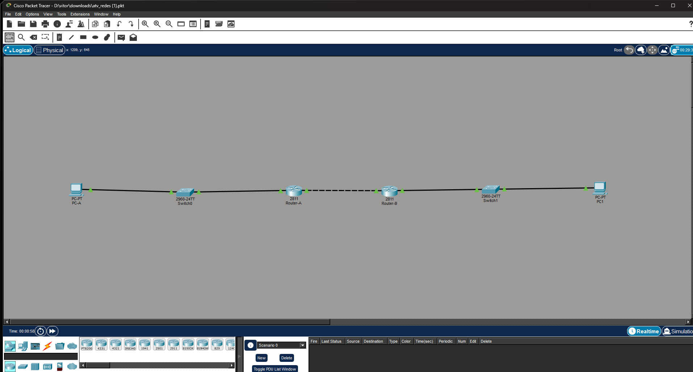
A imagem apresenta a estrutura da rede utilizada na simulação, incluindo roteadores, hosts e enlaces responsáveis pela comunicação entre as redes.
Configuração da VPN:
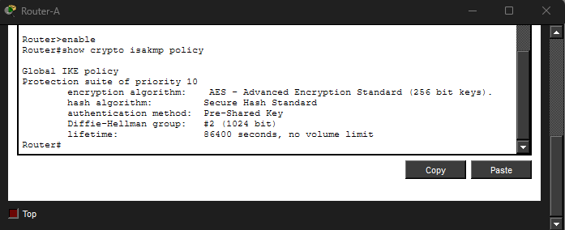
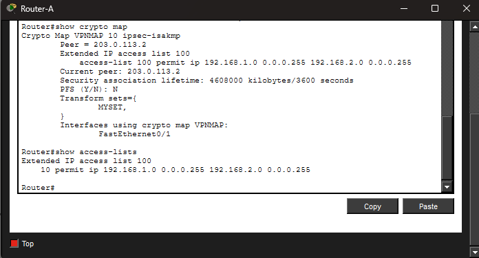
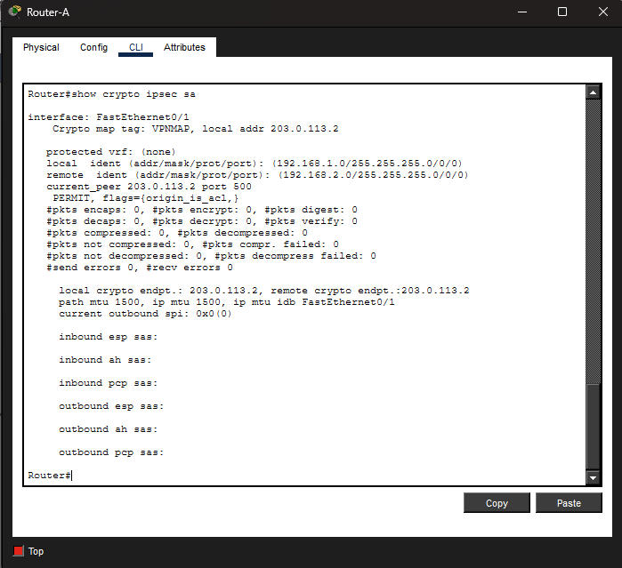
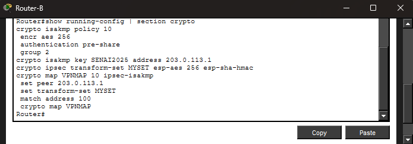
A configuração demonstra os parâmetros utilizados para o estabelecimento do túnel VPN entre os dispositivos da rede.
Testes de Conectividade:
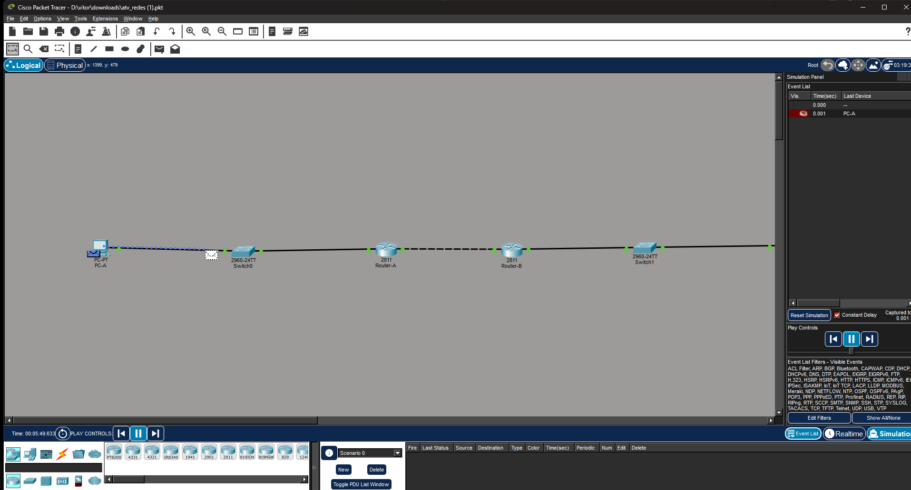
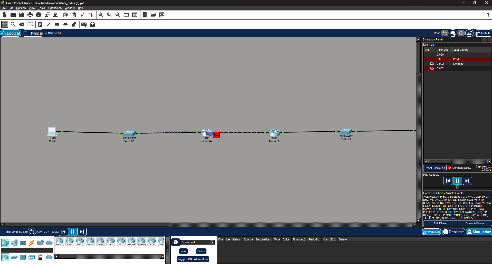
Os testes realizados demonstraram comunicação bem-sucedida entre dispositivos localizados em redes distintas conectadas pela VPN.
Explicação Técnica do Resultado: Uma VPN (Virtual Private Network) é uma tecnologia utilizada para estabelecer comunicação segura entre redes através de um meio potencialmente inseguro.
No ambiente corporativo, VPNs permitem conectar filiais, usuários remotos e diferentes segmentos de rede utilizando criptografia para proteger os dados transmitidos.
Na simulação realizada, os roteadores foram configurados para criar um túnel VPN entre as redes, permitindo troca segura de informações entre os dispositivos conectados.
A utilização da VPN garante: